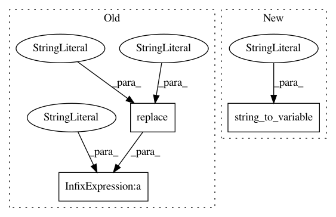

58998bce3eb6f80e2fb0e75329713c62ca6378aa,core/eolearn/core/visualizations.py,Visualization,eopatch_da_to_rgb,#Visualization#Any#Any#Any#,286
Before Change
timestamps = eopatch_da.coords["time"].values
bands = eopatch_da[..., self.rgb] * self.rgb_factor
bands = bands.rename({feature_name.replace("-", "_") + "_dim": "band"}).transpose("time", "band", "y", "x")
x_values, y_values = _new_coordinates(eopatch_da, crs, CRS.POP_WEB)
eopatch_rgb = xr.DataArray(data=np.clip(bands.data, 0, 1),
coords={"time": timestamps,
After Change
timestamps = eopatch_da.coords["time"].values
bands = eopatch_da[..., self.rgb] * self.rgb_factor
bands = bands.rename({string_to_variable(feature_name, "_dim"): "band"}).transpose("time", "band", "y", "x")
x_values, y_values = new_coordinates(eopatch_da, crs, CRS.POP_WEB)
eopatch_rgb = xr.DataArray(data=np.clip(bands.data, 0, 1),
coords={"time": timestamps,
In pattern: SUPERPATTERN
Frequency: 3
Non-data size: 3
Instances
Project Name: sentinel-hub/eo-learn
Commit Name: 58998bce3eb6f80e2fb0e75329713c62ca6378aa
Time: 2019-04-29
Author: andrej.burja@gmail.com
File Name: core/eolearn/core/visualizations.py
Class Name: Visualization
Method Name: eopatch_da_to_rgb
Project Name: sentinel-hub/eo-learn
Commit Name: 58998bce3eb6f80e2fb0e75329713c62ca6378aa
Time: 2019-04-29
Author: andrej.burja@gmail.com
File Name: core/eolearn/core/xarray_utils.py
Class Name:
Method Name: _get_depth_coordinates
Project Name: sentinel-hub/eo-learn
Commit Name: 58998bce3eb6f80e2fb0e75329713c62ca6378aa
Time: 2019-04-29
Author: andrej.burja@gmail.com
File Name: core/eolearn/core/xarray_utils.py
Class Name:
Method Name: get_dimensions